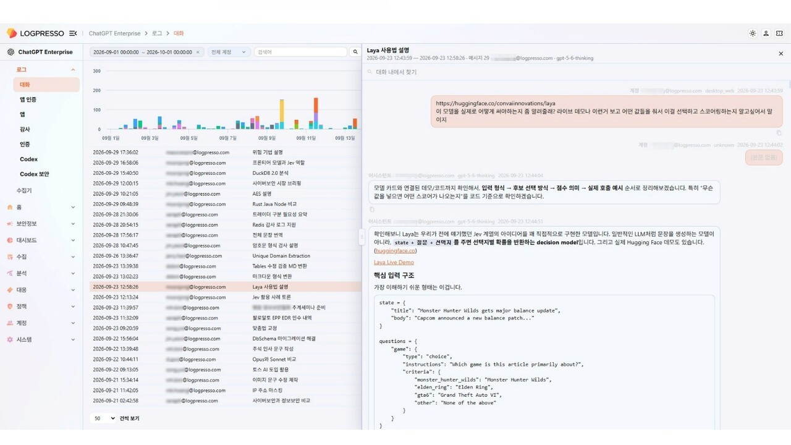
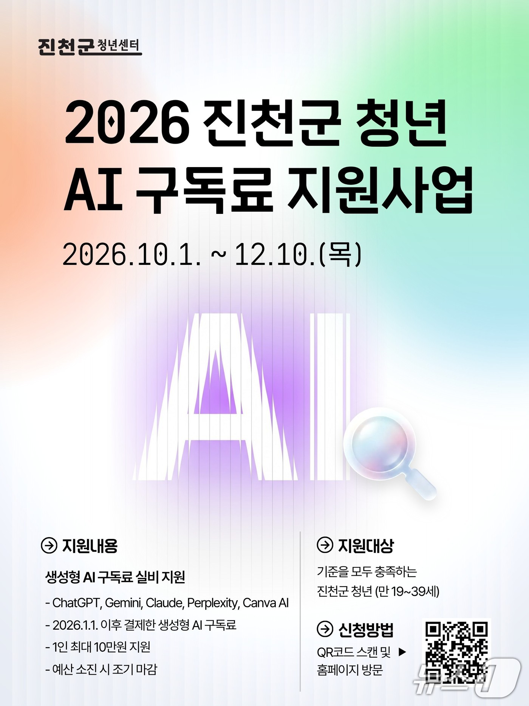
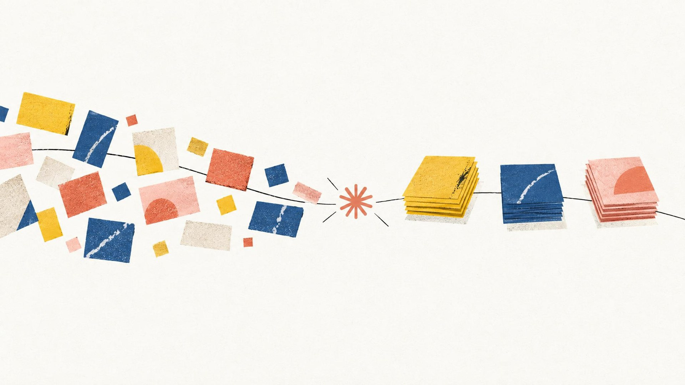
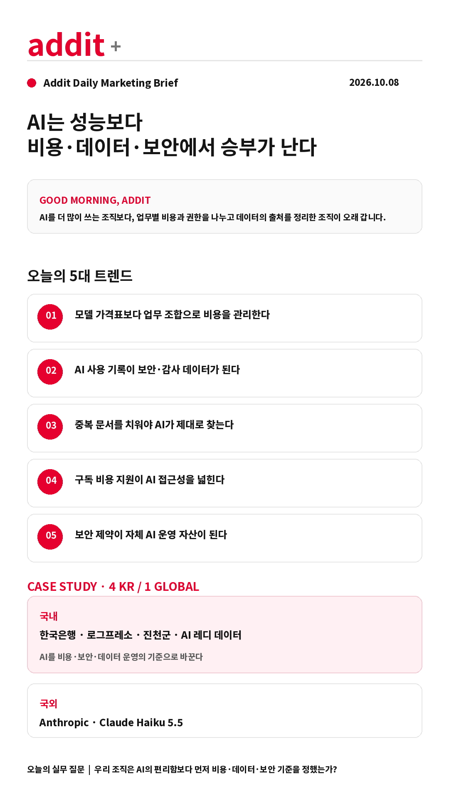

addit+
2026.10.08 Thu
ONLINE · SNS MARKETING BRIEFING
AI는 성능보다
비용·데이터·보안에서 승부가 난다
AI 경쟁의 기준이 모델 성능에서 운영비·데이터 품질·보안 체계로 이동하고 있습니다.
GOOD MORNING, ADDIT
AI를 더 많이 쓰는 조직보다, 업무별 비용과 권한을 나누고 데이터의 출처를 정리한 조직이 오래 갑니다. 오늘은 그 운영 구조가 실제로 어떻게 만들어지는지 살펴봅니다.
AI를 더 많이 쓰는 조직보다, 업무별 비용과 권한을 나누고 데이터의 출처를 정리한 조직이 오래 갑니다. 오늘은 그 운영 구조가 실제로 어떻게 만들어지는지 살펴봅니다.
TODAY'S 5 SIGNALS
AI 도입 다음에 필요한 다섯 가지 운영 기준
AI 사용 기록이 보안·감사 데이터가 된다
중복 문서를 치워야 AI가 제대로 찾는다
구독 비용 지원이 AI 접근성을 넓힌다
보안 제약이 자체 AI 운영 자산이 된다
CASE STUDY · 4 KR / 1 GLOBAL
원문 이미지로 확인하는 오늘의 실행 사례
KR · 한국일보
한국은행 — BOKI
망 분리와 보안 문제로 외부 생성형 AI를 쓰기 어려운 환경에서 자체 AI를 만들었습니다. 보도에 따르면 활용 가능 직원의 약 70%가 사용하고, 정착 시 연간 약 12만 시간 절감을 추산했습니다.
한국일보 원문 보기 →

KR · 보안뉴스로그프레소 — ChatGPT Enterprise 감사 연동
대화·인증·관리 감사·앱/MCP·Codex·커스텀 에이전트 등 10종 로그를 SIEM과 함께 수집합니다. 기업용 AI는 생산성 도구이면서 동시에 재현 가능한 보안 이벤트가 됩니다.
보안뉴스 원문 보기 →

KR · 뉴스1진천군 청년센터 — AI 구독료 지원
19~39세 진천군 청년이 ChatGPT·Gemini·Claude·Perplexity·Canva 등을 구독하면 실제 지출액을 1인 최대 10만 원까지 지원합니다. 교육보다 먼저 직접 써볼 수 있는 접근성을 설계한 사례입니다.
뉴스1 원문 보기 →
KR · 조선일보
AI 레디 데이터 — 문서와 통계의 재정비
필요한 자료만 제공했을 때보다 직원이 접근 가능한 문서 전체를 제공했을 때 AI 정보 탐색률이 낮아졌습니다. 문서 최신성, 접근 권한, 연도·지역·단위 메타데이터가 운영 경쟁력이 됩니다.
조선일보 원문 보기 →

GLOBAL · Unite.AIAnthropic — Claude Haiku 5.5
대량·비용 민감 업무를 겨냥한 소형 모델의 입력·출력 가격을 낮추고, Sonnet 5.5 캐시 읽기 비용도 절반으로 줄였습니다. 업무별 모델 라우팅의 실무적 근거가 되는 출시입니다.
Unite.AI 원문 보기 →
PLATFORM WATCH
원고에서 확인한 다음 운영 변화
MS·메타의 Claude 사용 축소
외부 모델 의존도를 비용·자체 도구·업무별 효율 기준으로 다시 조정합니다.
디지털타임스 원문 →챗봇 대화의 비밀 보장 논란
AI 일기와 상담 대화가 언제 증거가 될 수 있는지 약관과 법적 절차를 함께 확인해야 합니다.
조선일보 원문 →60대 이상 ChatGPT 이용자 증가
AI 확산이 젊은 사용자에만 국한되지 않으며, 고객 지원 콘텐츠의 사용 장벽도 낮아지고 있습니다.
뉴시스 원문 →Google Nano Banana 2.1
글자 표현과 생성 비용 개선은 이미지 생성의 실무 적용 범위를 넓힙니다.
ZDNet 원문 →
ADDIT INSIGHT
AI 경쟁의 다음 기준은 모델 크기가 아니라, 업무별 비용·데이터·보안을 얼마나 정교하게 운영하는가입니다.
ACTION CHECK
- 업무별 모델·월 비용·호출량을 비교했는가?
- 대화·인증·에이전트 행동을 감사할 수 있는가?
- 중복·구형 문서와 권한을 정리했는가?
- 직원이 직접 써볼 비용·과제를 연결했는가?
- 작은 모델로 대체 가능한 반복 업무를 분리했는가?